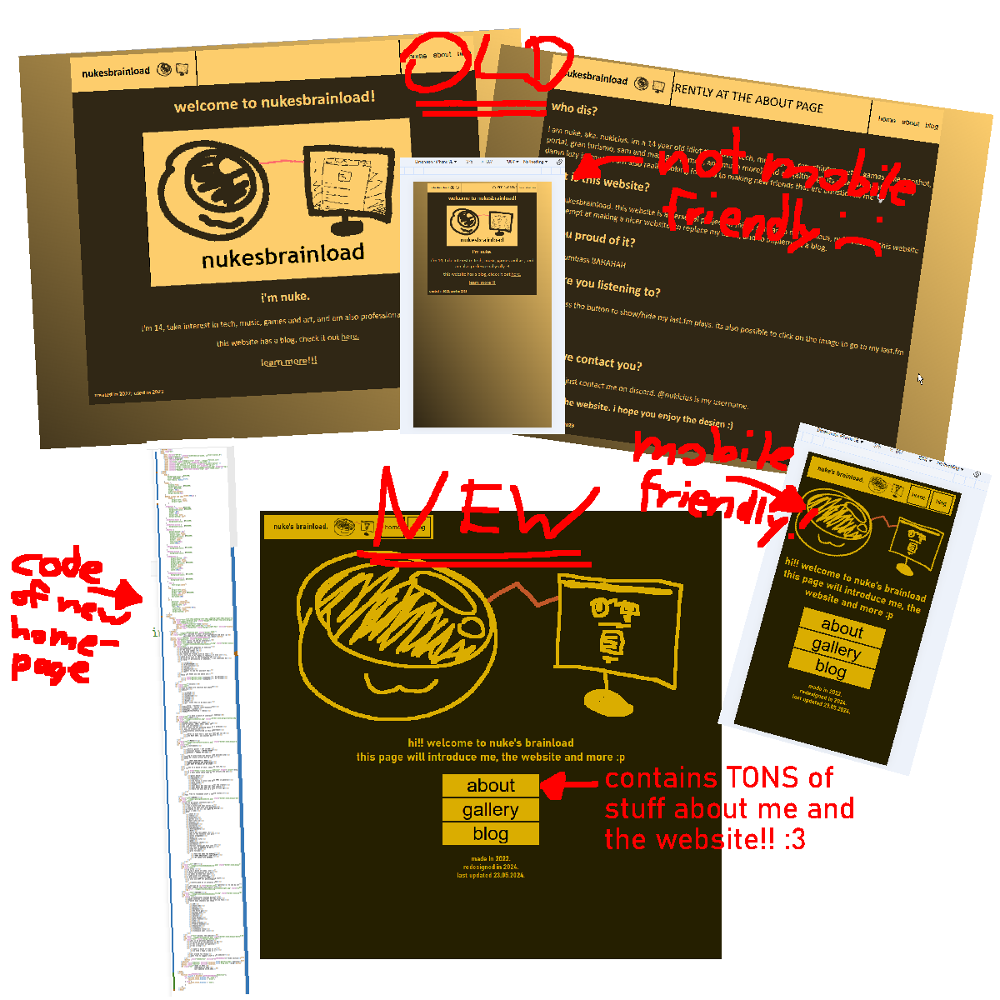

HEY GUYS. todays a good day because i finally stopped being such a fucking procrastinator and finished my website redesign!! im gonna tell you guys all about it cuz its cool (and also update yall on how ive been cuz why not) :))
okay so first of all,,,, WHATS NEW?
tons. by that i mean TONS. let me explain!!!
the homepage has had the BIGGEST change, and thats really due to me wanting to use this website as an introduction to myself. heres a comparison of the old homepage + about page versus the new homepage as of now:
as you can tell, i firstly have a new design language for the entire website, a moreso dark tinted black+yellow palette. i came up with this kinda look when i was making my former intro on tiktok!
its based off a poster for one of tame impala's old tours, the skeleton tiger tour from 2009
its got the same yellowish black as the background, but i went with a darker tone for the actual accent color of the website!
second of all, one of my biggest gripes about the website has been solved. i made it MOBILE FRIENDLYY!!
as you can see in the comparison, ive displayed the mobile versions of the old and new homepage, and its frankly pretty easy to tell what improvements have been made:
all in all, the website is actually, well, usable on mobile now. im very glad that i got that out of the way!!
third of all, i added a new page to the website :P
im now also gonna start using the website to show some of my art, some art of my stuff from people i know and other shit like that!! theres already a BUNCH of stuff in it which i would love for you to check out. its really just a little photodump, ya know
so yuh!! thats about it for the website, overall its got a VERY DIFFERENT new look which is sleek, it now explains me and itself VERY well with the homepage, it works for mobile devices correctly and it hosts some cool images!!!
now ME! its been 8 months since the last blog posts so shit has CHANGEDDD. lemme tell ya!
so first of all I TURNED 15!! my birthday was on the 23rd march (exactly 2 months before today lmao) and it was cool to say the least, i got my own vinyl player (audiotechnica LP-60X) and 5 albums on vinyl!!! check this out
its RAAAAAAADDDD
second of all i have actually been really happy in general recently, mostly due to the fact that ive found someone i love very dearly. i love you samber!!! :3
third of all i got this 2002 laptop which is really cool it runs windows xp its got 256 mb ram and its fucking sick
fourth of all i MAY OR MAY NOT get into tracker music,,,,, i find mod trackers so fucking interesting and cool OH MY GODDDDDDDDDDDDDDD id loveto be able to make my own, ive already started trying a bit im just not really good at that typa shit yk LMFAO
lastly i almost forgot to mention this but im a furry now
nukepute is my fursona you can see some images of it in the gallery :P